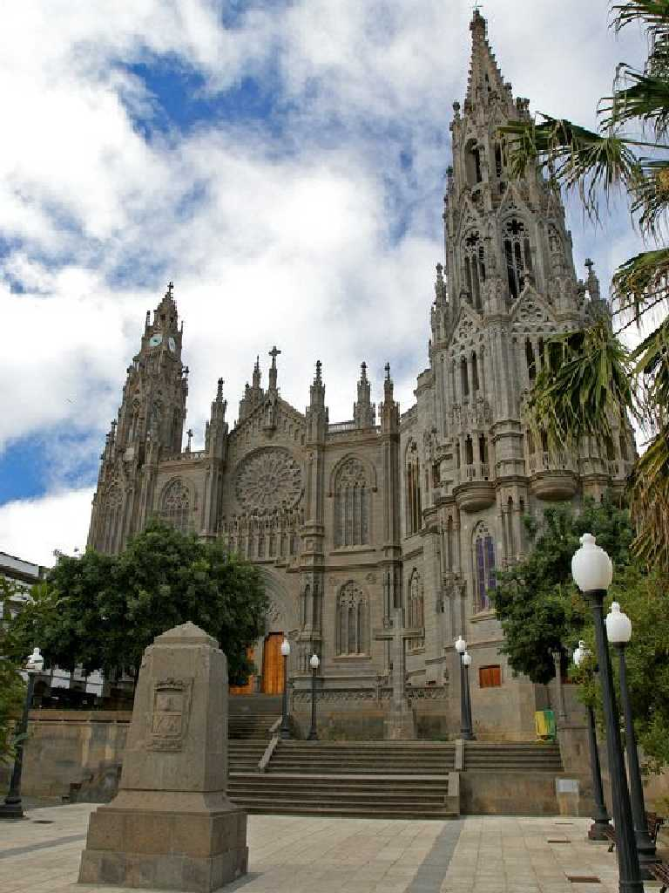
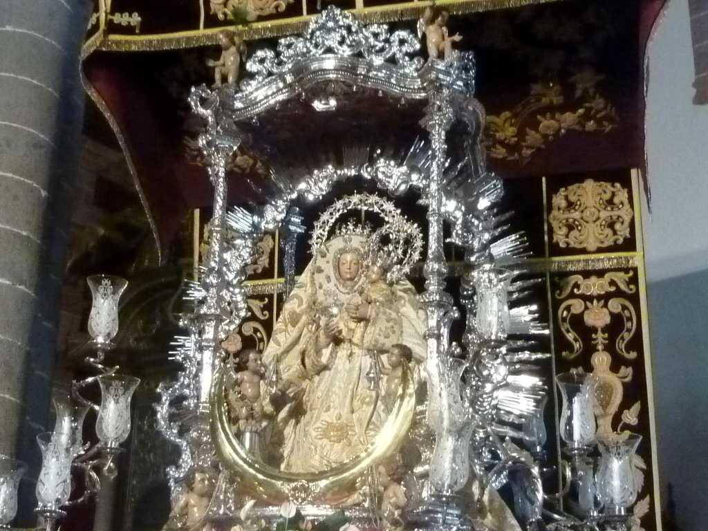
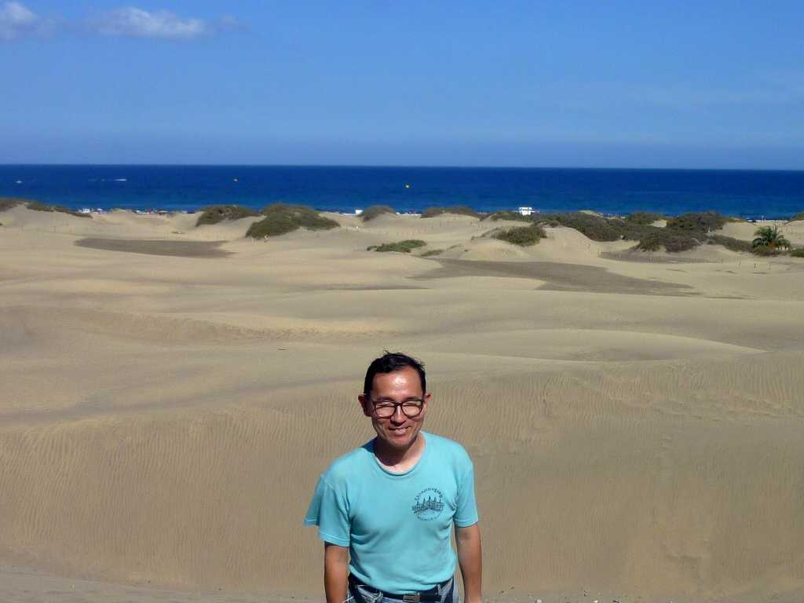
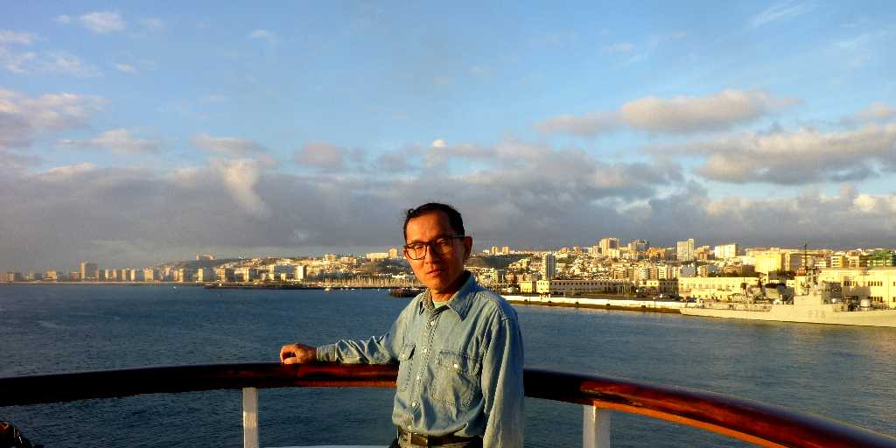

Islas Canarias
憧れのリゾート地として名高いカナリア諸島はアフリカのペルペル人系の先住民が居住していたがコロンブスの新大陸発見後は中継基地として栄えた

Iglesia de San Juan Arucas Gran Canaria

Nuestra Senora del Pion Teror Gran Canaria

September 11 2010 Dunas de Maspalomas Playa del Ingles Maspalomas Gran Canaria

September 11 2010 SS Oceanic Las Palmas Gran Canaria
コロンブスがたどった航路に従って北大西洋を１０日間かけて西インド諸島を通りキューバのハバナ港に向け出港